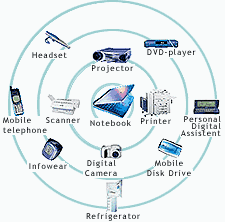

La rete PAN
La rete PAN (Personal Area Network) è una rete di computer e dispositivi elettronici che collega dispositivi personali in un'area molto ristretta, di solito entro un raggio di 10 metri o meno. Una rete PAN consente a dispositivi come telefoni cellulari, computer portatili, tablet e altri dispositivi elettronici personali di comunicare tra loro, scambiare dati e condividere risorse. Questa tecnologia è utile per connettere dispositivi tra loro per condividere file, stampanti e altri dispositivi di input/output. La tecnologia PAN più comune è il Bluetooth, ma esistono anche altre tecnologie PAN come ZigBee e Ultra-wideband (UWB). Un esempio di utilizzo della rete PAN è la connessione tra uno smartphone e un auricolare Bluetooth, oppure tra un mouse wireless e un computer portatile. La rete PAN è importante perché consente una connessione rapida e semplice tra dispositivi personali senza la necessità di cavi o di una rete Internet. Ciò consente una maggiore portabilità e flessibilità nell'utilizzo dei dispositivi.
